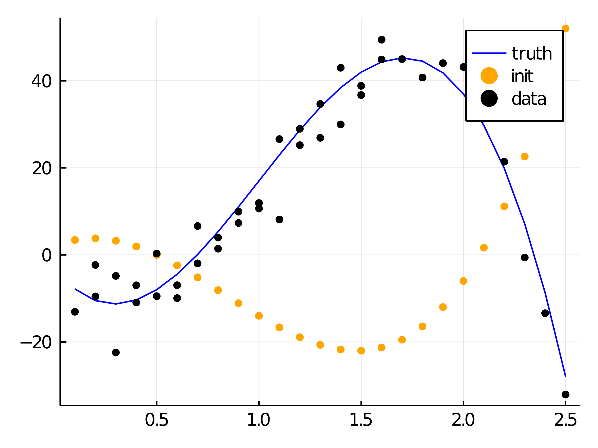
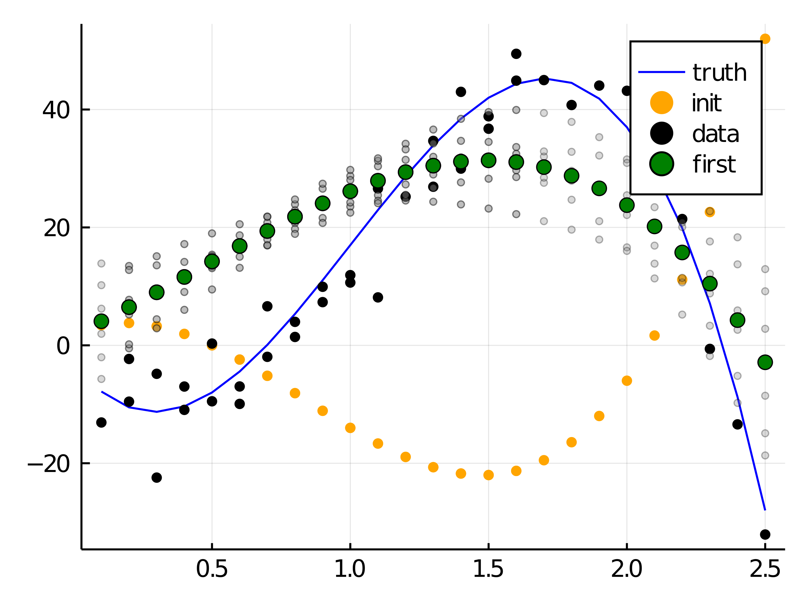
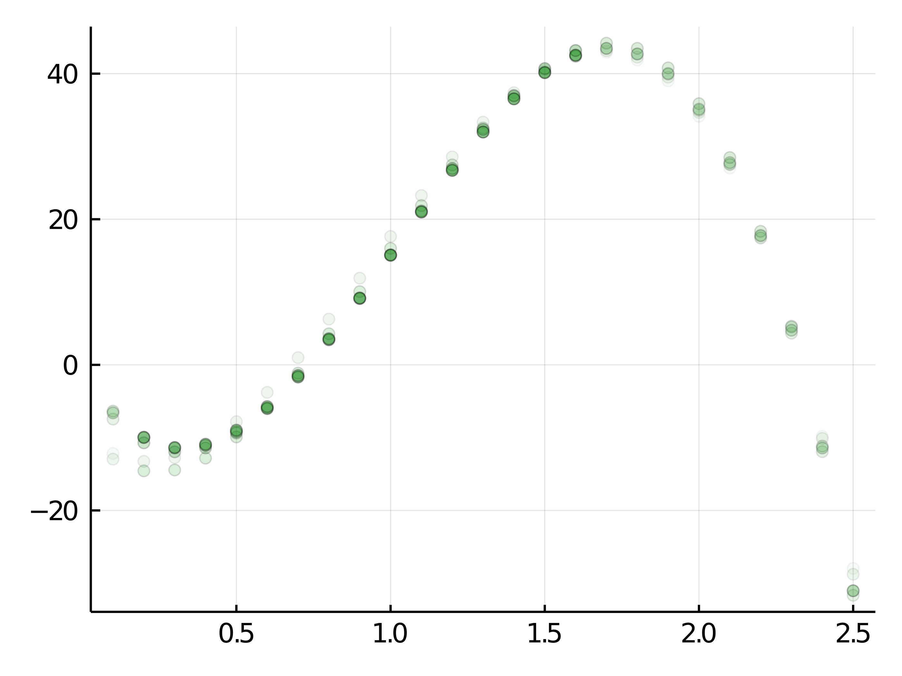
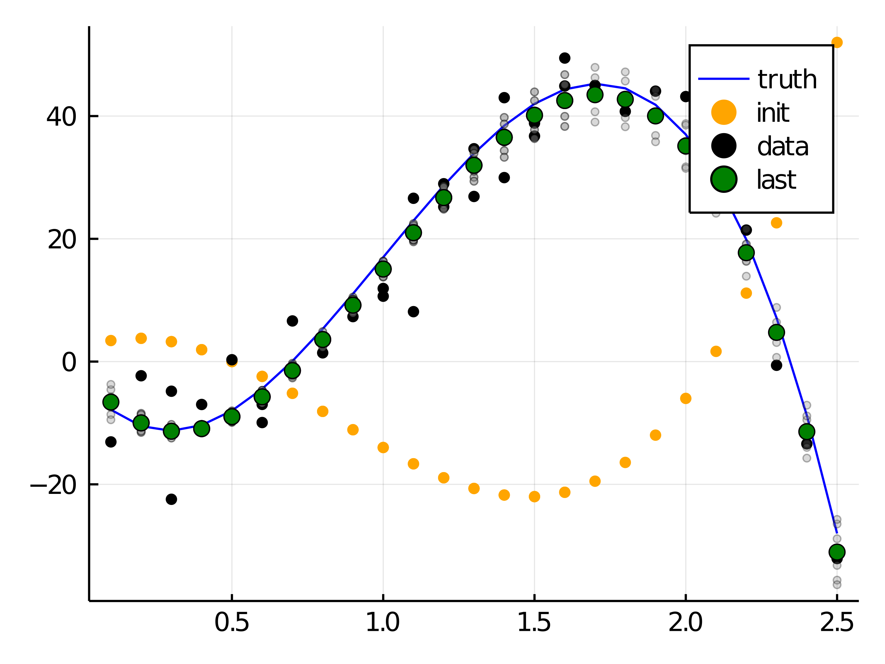

Tutorial
Notebook download nbviewer source
using MGVIusing Distributions
using Random
using ValueShapes
using LinearAlgebra
using OptimWe want to fit a 3-degree polynomial using two data sets (a and b). MGVI requires a model expressed as a function of the model parameters and returning an instance of the Distribution. In this example, since we have two sets of independent measurements, we express them as ValueShapes.NamedTupleDist.
We assume errors are normally distributed with unknown covariance, which has to be learned as well.
const _x1_grid = [Float64(i)/10 for i in 1:25]
const _x2_grid = [Float64(i)/10 + 0.1 for i in 1:15]
const _common_grid = sort(vcat(_x1_grid, _x2_grid))
function _mean(x_grid, p)
p[1]*10 .+ p[2]*40 .* x_grid .+ p[3]*600 .* x_grid.^2 .+ p[4]*80 .* x_grid.^3
end
function model(p)
dist1 = Product(Normal.(_mean(_x1_grid, p), p[5]^2*60))
dist2 = Product(Normal.(_mean(_x2_grid, p), p[5]^2*60))
NamedTupleDist(a=dist1,
b=dist2)
endmodel (generic function with 1 method)Here we define the ground truth of the parameters, as well as an initial guess.
const true_params = [
-0.3
-1.5
0.2
-0.5
0.3]
const starting_point = [
0.2
0.5
-0.1
0.3
-0.6
];
nothing #hidefunction pprintln(obj)
show(stdout, "text/plain", obj)
println()
end;
nothing #hideusing Plots
gr(size=(400, 300), dpi=700, fmt=:png)Plots.GRBackend()rng = MersenneTwister(157);
nothing #hideWe draw data directly from the model, using the true parameter values:
data = rand(rng, model(true_params), 1)[1];
nothing #hidefunction _mean(x::Vector)
_mean(_common_grid, x)
end
init_plots =() -> let
truth = _mean(true_params)
plot!(_common_grid, truth, markercolor=:blue, linecolor=:blue, label="truth")
scatter!(_common_grid, _mean(starting_point), markercolor=:orange, markerstrokewidth=0, markersize=3, label="init")
scatter!(vcat(_x1_grid, _x2_grid), reduce(vcat, data), markercolor=:black, markerstrokewidth=0, markersize=3, label="data")
end;
nothing #hideBefore we start the optimization, let's have an initial look at the data. It is also interesting to see how our starting guess performs.
p = plot()
init_plots()
Now we are ready to run one iteration of the MGVI. The output contains an updated parameter estimate (first_iteration.result), which we can compare to the true parameters.
first_iteration = mgvi_kl_optimize_step(rng,
model, data,
starting_point;
jacobian_func=FwdRevADJacobianFunc,
residual_sampler=ImplicitResidualSampler,
optim_options=Optim.Options(iterations=10, show_trace=true),
residual_sampler_options=(;cg_params=(;maxiter=10)))
pprintln(hcat(first_iteration.result, true_params))
p
plot_iteration = (params, label) -> let
#error_mat = mgvi_kl_errors(full_model, params)
#display(error_mat)
#errors = sqrt.(error_mat[diagind(error_mat)])
#yerr = abs.(line(common_grid, params+errors) - line(common_grid, params-errors))
#scatter!(common_grid, line(common_grid, params), markercolor=:green, label=label, yerr=yerr)
for sample in eachcol(params.samples)
scatter!(_common_grid, _mean(Vector(sample)), markercolor=:gray, markeralpha=0.3, markersize=2, label=nothing)
end
scatter!(_common_grid, _mean(params.result), markercolor=:green, label=label)
end;
nothing #hideNow let's also plot the curve corresponding to the new parameters after the first iteration:
p = plot()
init_plots()
plot_iteration(first_iteration, "first")
p
plot_iteration_light = (params, counter) -> let
scatter!(_common_grid, _mean(params.result), markercolor=:green, markersize=3, markeralpha=2*atan(counter/18)/π, label=nothing)
end;
nothing #hideFrom the plot above we see that one iteration is not enough. Let's do 5 more steps and plot the evolution of estimates.
init_plots()
plt = scatter()
next_iteration = first_iteration
for i in 1:5
pprintln(minimum(next_iteration.optimized))
pprintln(hcat(next_iteration.result, true_params))
global next_iteration = mgvi_kl_optimize_step(rng,
model, data,
next_iteration.result;
jacobian_func=FwdRevADJacobianFunc,
residual_sampler=ImplicitResidualSampler,
optim_options=Optim.Options(iterations=10, show_trace=true),
residual_sampler_options=(;cg_params=(;maxiter=10)))
plot_iteration_light(next_iteration, i)
end
pprintln(minimum(next_iteration.optimized))
pprintln(hcat(next_iteration.result, true_params))
plt
Finally, let's plot the last estimate and compare it to the truth. Also, notice, that gray dots represent samples from the approximation.
p = plot()
init_plots()
plot_iteration(next_iteration, "last")
p
This page was generated using Literate.jl.